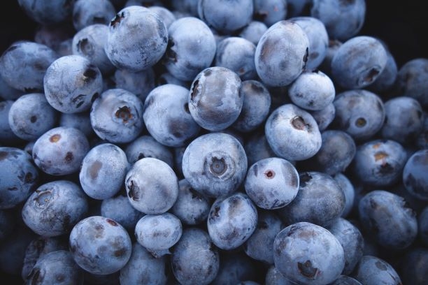
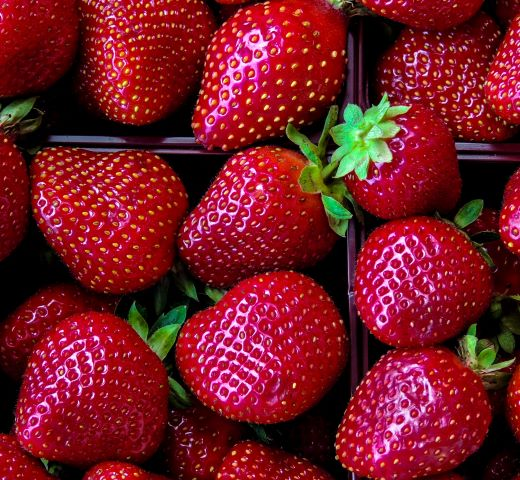

Whether you have them as a stand alone snack in the middle of a work-filled day or as part of salads, smoothies, pies or desserts, blueberries protect against memory loss.Furthermore,Blueberries contain iron, phosphorous, calcium, magnesium, manganese, zinc, and vitamin K. Each of these is a component of bone.

At Mattie's Fruits we pride ourselves in offering only the best choice berries..The pigment that gives berries their distinctive colour—called anthocyanin—is the same compound that provides them with amazing health benefits. People have been eating berries for more than 13,000 years.